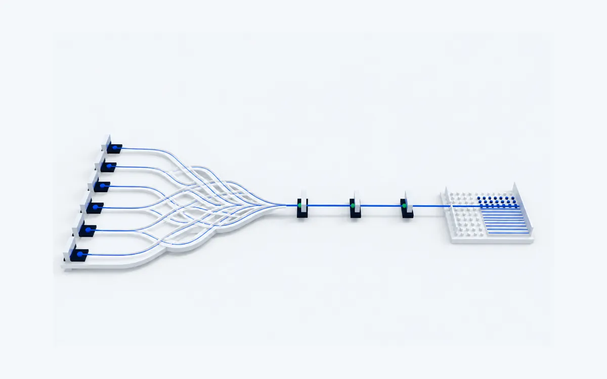
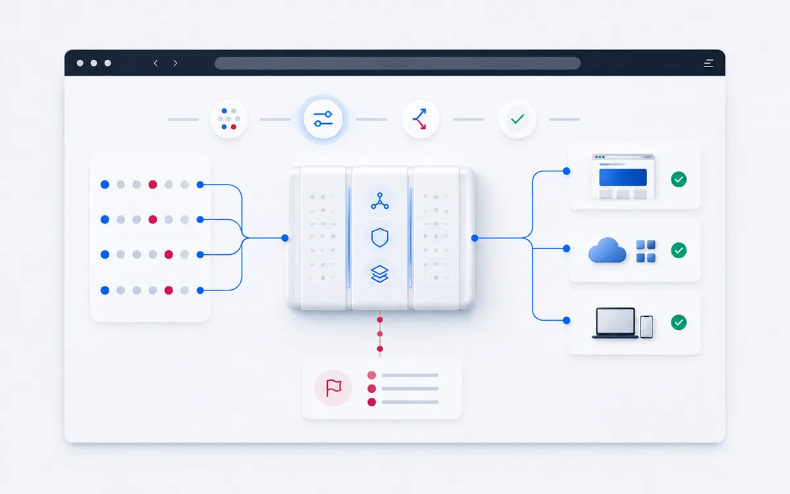
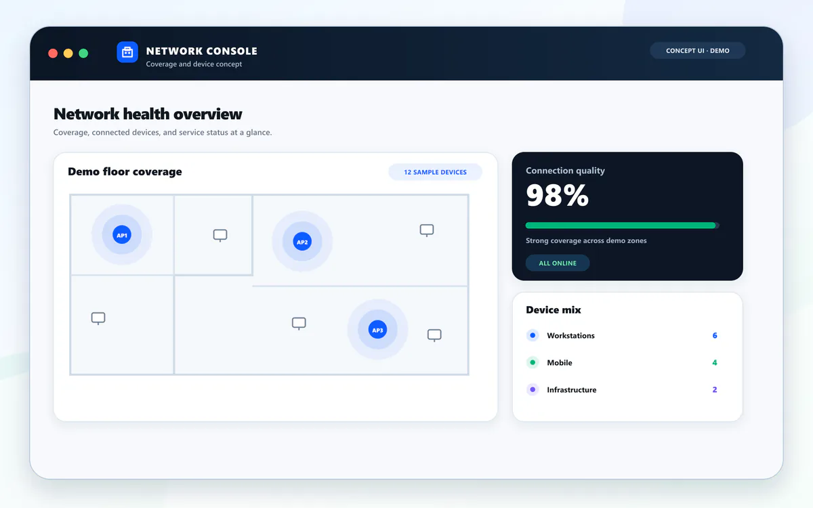
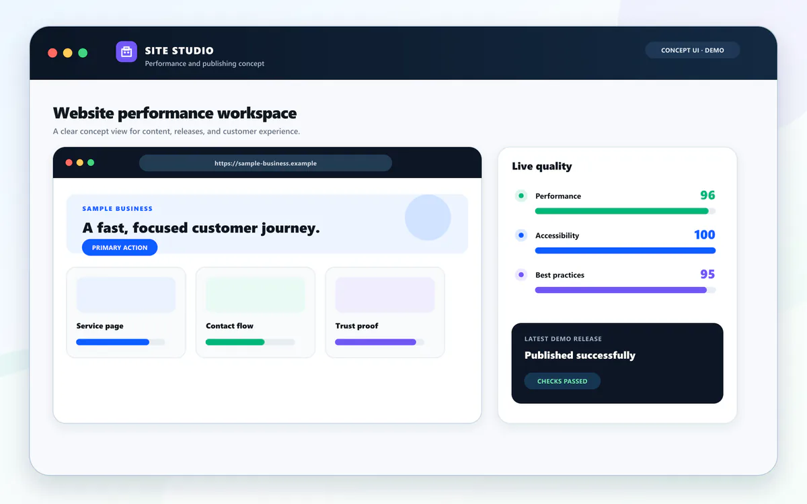

Public case studies
Public examples of EPIC TECH planning, infrastructure, security, and operational work. Sensitive implementation details, credentials, exact commands, IP addresses, and client or school identifiers are intentionally omitted.

Cloud Security & Automation
Planning, provisioning, and hardening cloud-hosted infrastructure using automation-first practices.

Cybersecurity & Compliance Assessment
Assessing business security gaps, organizing findings, and communicating practical remediation themes.
DISA STIG-Aligned System Hardening
A Linux system hardening project organized around DISA STIG-aligned concepts and business value.

Managed IT & Patch Management
Patch management framed as an ongoing operational security process instead of a one-time task.
Business Network Infrastructure Design
Planning, documenting, and selecting infrastructure for a small-business network architecture.

Secure Website & Application Practices
Building security into website and application planning, deployment, maintenance, and change control.
Vulnerability Assessment & Remediation
Reviewing, prioritizing, patching, validating, and documenting vulnerability remediation work.
Zero Trust Access Control
Approaching access control with least privilege, role-based access, MFA, logging, and revocation.